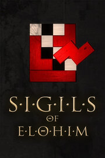

Sigils of Elohim
Sigils of Elohim
Detalles
|  | |
| Tiempo de juego | 1h 20m 0s |
| Última actividad | 19/06/2015 17:23:18 |
| Añadido | 23/07/2021 17:30:21 |
| Modificado | Nunca |
| Estado de finalización | Jugado |
| Librería | Steam |
| Fuente | Steam |
| Plataforma | PC (Windows) |
| Fecha de lanzamiento | 13/10/2014 |
| Puntuación de la Comunidad | 87 |
| Puntuación de la Crítica | |
| Puntuación de usuario | |
| Género | Casual Free to Play Indie Strategy |
| Desarrollador | Croteam |
| Editor | Devolver Digital |
| Característica | Single Player |
| Enlaces | Community Hub Discussions Guides News Store Page PCGamingWiki |
| Tag | |
Descripción
About The Talos Principle
http://store.steampowered.com/app/257510/
The Talos Principle is a first-person puzzle game in the tradition of philosophical science fiction. Made by Croteam, the creators of Serious Sam, and written by Tom Jubert (FTL, The Swapper) and Jonas Kyratzes (The Sea Will Claim Everything).
As if awakening from a deep sleep, you find yourself in a strange, contradictory world of ancient ruins and advanced technology. Tasked by your creator with solving a series of increasingly complex puzzles, you must decide whether to have faith, or to ask the difficult questions: Who are you? What is your purpose And what are you going to do about it?
Features:
- Overcome more than 120 immersive puzzles in a stunning world.
- Divert drones, disable turrets, and even replicate time to prove your worth - or to find a way out.
- Explore a story about humanity, technology, and civilization. Uncover clues, devise theories, and make up your own mind.
- Choose your own path through the game's non-linear world, solving puzzles your way.
- But remember: choices have consequences, and somebody's always watching you.

About the Game
Sigils of Elohim is a free mini-game prelude to Croteam’s upcoming first-person puzzler The Talos Principle that challenges players to solve dozens of formidable sigil puzzles under the watchful eye of Elohim. Subjects are tasked with deciphering a series of puzzle sets by rotating and placing the sigil shapes within the board in an effort to unlock helpful items and relics within The Talos Principle.Features
- Unravel the secrets of Elohim by completing nearly a hundred sigil puzzles as Sigils of Elohim is updated with new puzzle sets leading up to the launch of The Talos Principle.
- Acquire items and relics in Sigils of Elohim on PC, Mac, and Linux that transfer over to The Talos Principle on PlayStation 4, PC, Mac, Linux and Android.